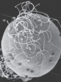
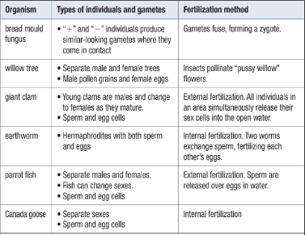
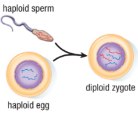
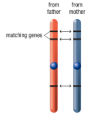
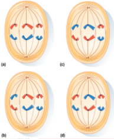
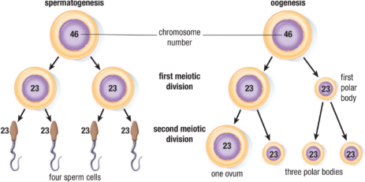
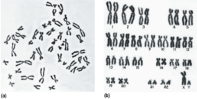
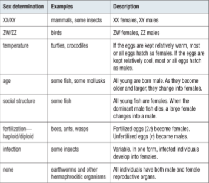

Sexual Reproduction: Adding Variety

Sexual reproduction involves two key processes. The first is the formation of haploid sex cells, or gametes, which contain genetic information from the parents. The second process is fertilization, which occurs when two sex cells join to produce a zygote—the first cell of a new individual.
Modes of Sexual Reproduction
The sex cells of different organisms vary considerably in size, shape, and mobility. Most species produce two different types of sex cells. In animals, the reproductive organs that produce sex cells are the testes (which produce sperm cells) and the ovaries (which produce egg cells, or ova).

Sperm cells are able to swim using one or more flagella. Here many sperm can be seen surrounding the much larger egg cell, or ovum.
| Many species have distinct male and female individuals—each possessing only one type of sex organ and the ability to produce only one kind of sex cell. Other species are hermaphroditic, meaning that they are composed of individuals that produce both male and female gametes. Fertilization strategies can be highly variable. Highlights some of the diversity in sexual reproduction. |
Sexual Gametes and Fertilization Methods in Various Organisms

While types of individuals and methods of fertilization are highly variable across the kingdoms of life, the formation of gametes is less so. Most sexually reproducing eukaryotes produce specialized sex cells using a very similar process. In the remainder of this section, we will examine the formation of sex cells and the processes that influence and determine their genetic contents.
Meiosis
Sexual reproduction depends on meiosis, the process in which haploid gametes are formed. Meiosis involves two stages of cell division that have phases similar to those in mitosis. In mitosis, the chromosome number of the daughter cells is the same as that of the parent cell. In meiosis, the chromosome number of the daughter cells is half that of the parent cell.
The result of sexual reproduction is that offspring receive genetic material from each parent in the form of haploid gametes. When combined, two gametes produce a zygote that contains one complete set of chromosomes.
Fertilization results in a zygote
that has two sets (2n) of chromosomes—one set from each parent.

|
What may surprise you is that you receive a nearly complete set of genetic instructions from each of your parents. Rather than contributing information for one-half of your genes, each parent contributes a copy of virtually every gene. You receive one version from your father and one version from your mother.
For example, both of your parents give you a gene containing information for eye color. That information might be the same—instructions for blue eyes from both parents—but it could also be different—brown eye information from one parent and blue eye information from the other parent. In this way, each parent contributes one version of genetic information for each corresponding gene.
Each of the 23 chromosomes you receive from your father is matched by 23 chromosomes from your mother. The paired chromosomes are called homologous chromosomes. With the exception of a pair of special sex chromosomes, which we will examine later, homologous chromosomes are similar in size and shape and carry genetic information for the same genes. |

Homologous chromosomes carry information for the same genes.
Meiosis
Fertilization occurs when a haploid sperm cell (n = 23) unites with a haploid egg cell (n = 23) to form a diploid zygote (2n = 46). The zygote then begins a process of ongoing growth, mitotic cellular division, and cell specialization that will ultimately produce a mature multicellular individual.
Stages of Meiosis
Meiosis involves two divisions that produce four haploid cells. Meiosis I, the first division, is often described as a reduction division because the diploid, or 2n, chromosome number is reduced by half to the haploid, or n, chromosome number. This reduction in chromosome number is a key distinguishing feature of meiosis. In the second division, meiosis II, the number of chromosomes is unchanged, but the total number of cells increases to four.
Random Assortment of Homologous Chromosomes
Carefully examine the four chromosome arrangements illustrated.

|
The number of possible combinations of chromosomes depends on the number of chromosome pairs. For any diploid (2n) organism, the number of combinations is 2n. With three pairs of chromosomes, the number of possible combinations is 23 = 8. If there are 23 pairs of chromosomes, as in humans, the number of possible combinations is 223 = 8 388 608!
If you have ever wondered why no two people are exactly alike—even two siblings—you now have your answer! |
Gametogenesis
In animals, meiosis takes place in the testes and ovaries. The formation of sex cells in meiosis is called gametogenesis. The production of sperm cells is called spermatogenesis, whereas the production of egg cells (ova) is called oogenesis. In oogenesis, the cytoplasm of the female gametes does not divide equally during each of the two cell divisions of meiosis.
Spermatogenesis and Oogenesis

Karyotypes
During stages of cell division, chromosomes can be stained, viewed, and photographed under a microscope. Doing this allows scientists to count, compare, and arrange the chromosomes according to their size and type. A picture of chromosomes that have been arranged according to number, size, shape, or some other characteristic is called a karyotype.

(a) After all chromosomes from a single human cell are stained and photographed,
(b) they can be arranged into a karyotype based on their characteristics.
Sex Chromosomes and Sex Determination
Many eukaryotic organisms, including most animals, have at least one pair of chromosomes that differ between the males and females of that species. In most mammals, for example, sex chromosomes consist of a matching pair of homologous chromosomes in females and a partially matching pair in males. In males, one chromosome is much smaller than the other. The larger of the two chromosomes is a homolog to the sex chromosomes in the female.
Sex chromosomes of a female and of a male.
➤Chromosomes that are not sex chromosomes are referred to as autosomes.
➤This pattern of XX sex chromosomes in females and XY sex chromosomes in
males is referred to as the XX/XY sex-determination system.
➤The XX/XY system is only one of many systems used by living things to deter-
mine the sex of the offspring.
